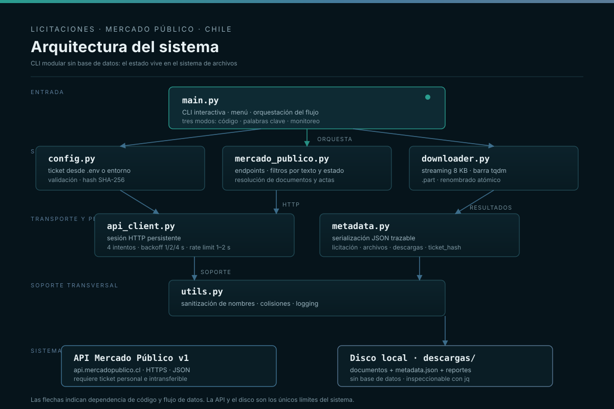

licitaciones-mercado-publico
raíz del repoVersión única conservada: Python + requests + dotenv + tqdm, con tres modos de operación.
Ver carpetaTres modos para encontrar licitaciones: por código, por palabras clave o cada 30 minutos.

Automatización de consultas al Mercado Público chileno: búsqueda por código, búsqueda por palabras clave y monitoreo periódico con descarga de documentos.
Revisar el Mercado Público a mano todos los días no escala y deja pasar oportunidades.
Un script configurable que consulta la API, filtra y descarga la documentación relevante.
Cada carpeta conserva una etapa del proyecto. No se borraron las anteriores: se pusieron en contexto.
Versión única conservada: Python + requests + dotenv + tqdm, con tres modos de operación.
Ver carpetaCompletá las variables de entorno y el ticket.
Código, palabras clave o monitoreo.
Corré el script y revisá la salida.
Dejá el modo monitoreo cada 30 minutos.
Código, palabras clave y monitoreo.
Baja documentos y metadata.
Palabras clave configurables.
Progreso con tqdm.
Sin credenciales en el código.
Datasheet, developer y referencias.
git clone https://github.com/jmadasme/licitaciones-mercado-publico.git cd licitaciones-mercado-publico python3 -m venv venv && source venv/bin/activate pip install -r requirements.txt cp .env.example .env python main.py
Cada documento está en el repositorio, versionado junto al código.
Usá esto como base y referencia para licitaciones mercado público. Este proyecto es la prueba de que se puede hacer con componentes reales.